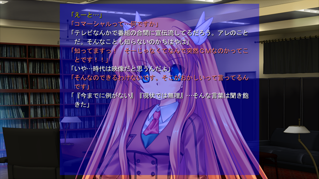

スクリプトマニュアル ＞ メッセージ ＞ ノベルモード
ノベルモード メッセージをノベルモードにすることができます。 ノベルモードにするには、メッセージウィンドウの設定を行います。 #MWND.000.NOVEL_MODE = 0 // 0:ＡＶＧモード、1:ノベルモード #MWND.000.NAME_DISP_MODE = 0 // 0:名前ウィンドウに表示、1:メッセージの先頭に表示、2:表示しない 詳しくは メッセージウィンドウ個別の設定 を参照して下さい。 ノベルモード通常、r コマンドを実行すると、メッセージがクリアされていました。 ノベルモードでは r コマンドではメッセージはクリアされません。 クリアするには page コマンドを使います。
(2010/10/26) ノベルモードでの文章送りを、pp nl などで行ってはいけません。
必ず r コマンドを使って下さい。古いサンプルでは行っていましたが、間違いです。
セーブポイントの設置、メッセージバック、既読フラグなどが正常に働かなくなります。
ノベルモードのサンプルKOE(101900064,002)【ちはや】「あはは、瑚太朗はばかですねー」R 【瑚太朗】「………」R KOE(101900068,002)【ちはや】「な、何ですかその目はっ」R 【瑚太朗】「馬鹿にばかって言われてもなんだか逆に可哀想にしか…」R KOE(101900072,002)【ちはや】「な、何ですかそれっ！？ ばかっていうやつのほうがばかなんですっ！」PAGE |